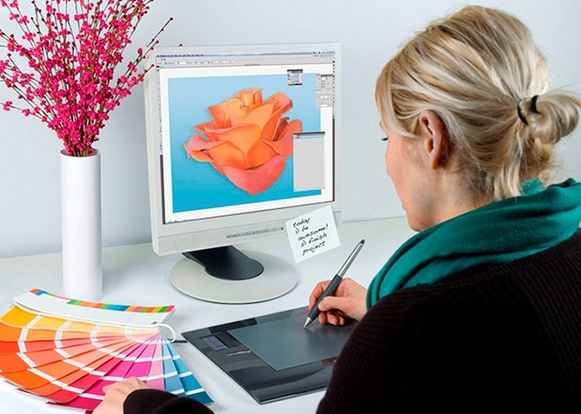
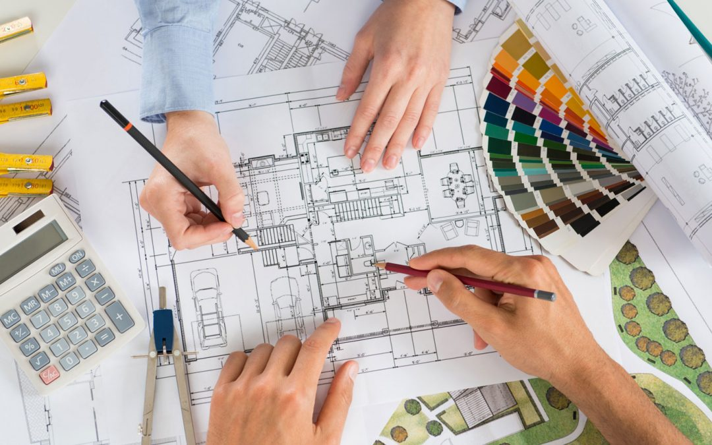

Мій вибір

“Моя майбутня професія – дизайнер”
З самого дитинства кожна людина мріяв про те, щоб в майбутньому отримати будь-яку професію. Мрії у всіх були абсолютно різні: комусь до вподоби припадали технічні професії, на кшталт інженера або архітектора. Хтось віддавав перевагу більш творчих професій, таким як хореограф, музикант або ж дизайнер.
Ще з самого раннього дитинства мені до душі припала професія дизайнера. Найбільше в ній мені подобається те, що я можу максимально показати весь свій творчий потенціал. Ця професія дає можливість в повній мірі проявити свою фантазію і уяву. Дуже здорово, що починати вчитися основним навичкам дизайнера, можна абсолютно в будь-якому віці. Тобто ніякі вікові рамки даної професії не перешкода. Звичайно ж, хочеться відзначити, що дизайнер – неймовірно затребувана професія сьогодні, так як для більшості людей в сучасному суспільстві дуже важливий їх зовнішній вигляд. Не варто забувати і про те, що для того, щоб працювати в сфері моди, необов’язково вивчати на дизайнера. Досить буде і індивідуального таланту, а також деяких базових знань цієї галузі.
Як на мене, професія дизайнера поєднує в собі важливість і креативність одночасно, тому я не шкодую про свій вибір.
